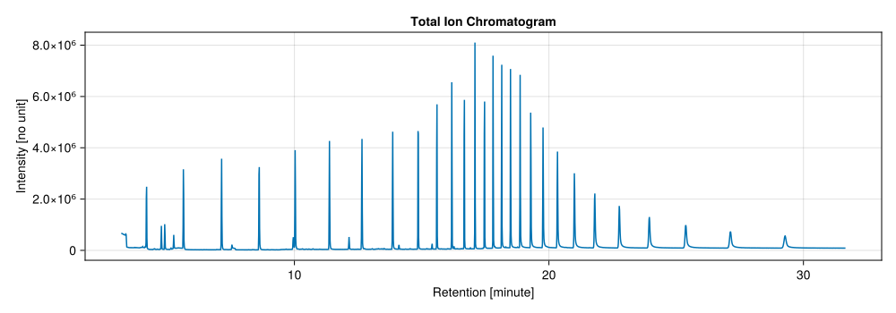

JuChrom.jl
JuChrom is a Julia package for loading, storing, and analyzing chromatographic data, with an emphasis on gas chromatography-mass spectrometry (GC-MS). The core API is pure Julia, while some vendor-specific loaders (for example, the Shimadzu MS loader) rely on optional extensions that use PyCall and the Python olefile module.
Installation
The package is not registered, so install it directly from GitHub:
julia> ]
pkg> add https://github.com/oniehuis/JuChrom.jlAfter the installation finishes you can load it in the Julia REPL with:
julia> using JuChromCurrent capabilities
- Data structures for chromatographic and mass-spectral scans (retention, intensity, and m/z values), scan series, and matrices, including metadata. Retention times, intensities, and m/z values can carry
Unitfulunits. - Loaders for proprietary vendor formats, including Agilent MassHunter GC-MS, Agilent ChemStation MS, Agilent FID, and Shimadzu GC-MS data (the Shimadzu loader is available when the PyCall extension is loaded).
- Conversions between representations, including extracted-ion and total ion chromatograms from MS scan series or matrices.
- Transformations such as retention trimming, retention binning, and m/z binning within scans.
- Quadratic variance modeling of GC-MS intensities from technical replicates.
- Baseline estimation for chromatographic traces (e.g., individual ions or TICs).
- Retention mapping to fit continuous functions (and derivatives) that convert between retention times and retention indices.
- Spectral similarity tools (cosine distance/similarity) and a dynamic-programming alignment routine for matching spectra based on similarity scores.
Quickstart
# Load JuChrom package and its optional Agilent ChemStation MS loader
using JuChrom
using JuChrom.ChemStationMSLoader
# Load CairoMakie package for plotting
using CairoMakie
CairoMakie.activate!()
# Load GC-MS run data from an example Agilent ChemStation "data.ms" file
file = joinpath(JuChrom.agilent, "C7-C40_ChemStationMS.D", "data.ms")
ms_series = load(ChemStationMS(file; mode=:ms))MassScanSeries with 2405 scans
├─ Scan type:
│ └─ MassScan{Float32, Unitful.FreeUnits{(ms,), 𝐓, nothing}, Vector{Float32}, Nothing, Vector{Int32}, Nothing, Int64, @NamedTuple{}}
├─ Retention:
│ ├─ Range: 191941.0 to 1.899047e6 (ms)
│ └─ Type: Float32
├─ M/Z values:
│ ├─ Range: 29.0 to 562.9 (unitless)
│ ├─ Total data points: 1526985
│ └─ Type: Float32
├─ Intensity:
│ ├─ Range: 0 to 1186816 (unitless)
│ ├─ Type: Int32
│ └─ MS Level: 1
└─ Annotations:
├─ Instrument:
│ ├─ type = MSD 5977B
│ ├─ inlet = unknown
│ └─ method = VM_STD_Auto_SPME.M
├─ Acquisition:
│ ├─ datetime = 19 Jun 24 05:06 pm
│ ├─ sequence = 0
│ ├─ vial = 23
│ └─ replicate = 0
├─ User: operator = unknown
└─ Sample:
├─ sample = C7-C40_vial4_dil4_June19_2024
└─ description = Alkanstandard vial 4 4x verdünnt
# Infer tic and plot total ion chromatogram into SVG file
tic = mzchrom(ms_series)
fig_1 = Figure(; size=(1000, 400))
axis_1 = Axis(fig_1[1,1], title="Total Ion Chromatogram",
ylabel="Intensity [no unit]",
xlabel="Retention [minute]")
lines!(axis_1, rawretentions(tic, unit=u"minute"), rawintensities(tic), color=:red)
save("tic.svg", fig_1)CairoMakie.Screen{SVG}
This will produce the following Scalable Vector Graphics (SVG) file:

Disclaimer
JuChrom is provided "as is," without warranty of any kind. Users are responsible for independently validating all outputs and interpretations and for determining suitability for their specific applications. The authors and contributors disclaim any liability for errors, omissions, or any consequences arising from use of the software, including use in regulated, clinical, or safety-critical contexts.